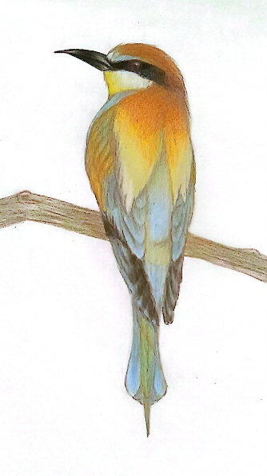

Egészen kicsi korom óta szeretek alkotni, mikor úgy adódik napi több órát is belefektetni. Számos technikát kipróbáltam már: grafit- és színes ceruza, vízfesték, tempera, akril festék, szén, agyagozás, porcelán, gyurma, zsírkréta, pasztellkréta, fafaragás. Ezek közül számomra a legkedveltebbek a ceruzás technikák, természetesen szabadkézi technikákkal ismerkedtem meg először, azonban idővel érdekelni kezdett a két iránypontos perspektíva rajzok precízebb szerkesztése, idén egyetemen a műszaki rajzolással ismerkedem.
Nagyon szeretek utazni, világot látni, amikor meg van rá az időm. Európán belül sok városban jártam már, köztül Budapest, Bécs, Berlin, München, Prága, Pozsony és Velence, ám nem szeretném, hogy ez a lista itt érjen végt,az alábbi helyekre el szeretnék jutni a következő x évben:
szoveg4